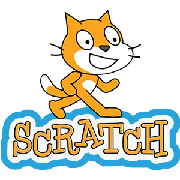

OUR COURSES
What You Can Learn
-

Computational Thinking and Design - Scratch
You will learn how to think in algorithmic way , to construct a step-by-step process for solving a problem. Algorithmic thinking is not solving for a specific answer; instead, it solves how to build a sequential, complete, and replicable process that has an end point – an algorithm. Designing an algorithm helps users to both communicate and interpret clear instructions for a predictable, reliable output. This course is recommended for students and their teachers to start programming in Scratch Visual Programming Language.
Requirements: No prior programming knowledge is required.
50 hours 10 days 2 Certificates -

ICT tools in education
You will learn how to make more interesting class for students using Web 2.0 tools. In this course will be included online software programs that allow participants to do a number of different things. They can be used to teach curriculum content, make online quizzes, store data, create/edit video, edit photos, collaborate and so much more. Gamification is part of this course. Also latest innovations in AI are going to be introduced, ex. how to use ChatGPT and other similar applications.
Requirements: No prior programming knowledge is required.
50 hours 10 days 2 Certificates -

STEM education
STEM stands for Science, Technology, Engineering and Mathematics. It isn’t just a grouping of different subjects, it is a campaign to develop the deep scientific, mathematic and problem-solving skills that our students are going to need to be competitive in the workforce. By introducing this way of thinking in the early years, we are laying the foundation for our future leaders. You will implement science using experiments, developed in our previous projects for education!
Requirements: No prior programming knowledge is required.
50 hours 10 days 2 Certificates -

Python in Robotics
Do you want to use Robot in education? If the answer is yes, then learning Python is mandatory for you. Python is the most popular programming language for robots, and it is also the faster and easier way to learn ROS. In this Python for Robotics course, you will master essential Python knowledge, in order to get started with ROS smoothly. If you have Lego robot in the school , but do not know how to use it, this is the course for you…
Requirements: No prior programming knowledge is required.
50 hours 10 days 2 Certificates -
Online Education
You will learn new techniques for engaging students during online classes. The concept of traditional education has changed radically within the last couple of years, especially after pandemics, we saw that students are not much interested and occupied. Online education will exist as option, so this course will teach you how to implement blended learning for students home and the one in the school.
Requirements: No prior programming knowledge is required.
50 hours 10 days 2 Certificates -

Adaptive Learning
This course is how to adapt student’s needs using e-learning platforms Ability for adaptation to the needs of individual user can significantly improve the teaching process, as has been shown that the best method of teaching is individualized tutoring. Students are more responsible when you set deadlines and clear instructions for upcoming activities.The implementation of new developments in education offers chalenges and opportunities such as distance learning, lifelong learning and e-learning.
Requirements: No prior programming knowledge is required.
50 hours 10 days 2 Certificates -

Web development for begginers
You will learn basic concept of Web development, front end concepts. It refers to creating, building, and maintaining of websites. It includes aspects such as web design, web publishing, web programming. Main topics to cover: HTML, CSS, JavaScript. You will be able to work on templates and customize the design of the web site. This skill is one of the most needed, so you will have more employability options.
Requirements: No prior programming knowledge is required.
50 hours 10 days 2 Certificates -

Computer Programming for Beginners
This course is meant to introduce people who have no programming experience in basic concept of computer programming. This course will teach the basic, foundation concepts of programming in an easy-to-follow manner. It is the process of writing code to facilitate specific actions in a computer, application or software program, and instructs them on how to perform. It is tailored for beginners in coding (students or adults), C++ concepts will be implemented. No prior knowledge is needed.
Requirements: No prior programming knowledge is required.
40 Hours 8 Days 1 Certificate -

Digital skills and climate change
Climate change is arguably one of the biggest issues hanging around the planet earth for more than a decade. Trying to understand and predict how climate change will affect the world is a tough problem. This course describes what is climate change?, how it is caused, why it is dangerous?, how to change climate change and how computer science can be used to tackle climate change Issues. Scientists rely on computer models to better understand the earth’s climate system because they cannot conduct large-scale experiments on the atmosphere itself.
28 Hours 5 Days 1 CertificateRequirements: No prior programming knowledge is required.
-

Online Education
This course will help you with your day to day activities with your students. You will learn modern tools that can be used in education and will boost your overall computer knowledge.
Platforms/Tools you will learn: Moodle, Dropbox, Online surveys
Requirements: No prior knowledge is required.
30 Hours 6 Days 2 Certificates -

Quality assurance
Are you interested in changing your job? This course is for you who like to join IT (Information Technology) industry quick. Software Testing is a fast route to land on IT jobs. Software Testing; also known as Software Quality Assurance (SQA) is one of the most critical functions within the Software Development industry. This course covers Software Development Life Cycle, Software Test Life Cycle, QA testing, QA process, QA methodology, Tools, types of testing, JIRA etc…
Platforms/Tools you will learn: Moodle, Dropbox, Online surveys
Requirements: No prior knowledge is required.
30 Hours 6 Days 2 Certificates